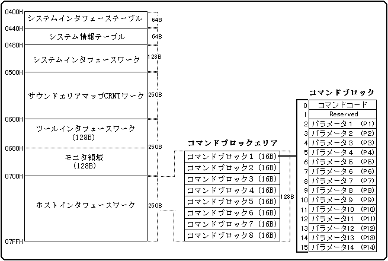

★SOUND Manual
★サウンドドライバプログラマーズガイド
★SOUND Manual
★サウンドドライバプログラマーズガイド
コントロールコマンドの発行は下記のコマンドブロックエリアに対して行います。16バイトのコマンドブロックに、コマンドコードと必要なパラメータ(P1--P14)を書き込んでください。コマンドブロックは8ブロックありますので、最大8コマンドまでを同時に発行することができます。
システムインタフェース領域

サウンドコントロールは動作を指示する「コマンド」とそれに付随する必要な情報として「パラメータ」をホストインターフェース（RAMエリア0x25a00700〜0x25a0077f）へ書き込んでやることによってサウンドプログラムがそれに反応するといった動作手順を踏んでいます。また、再生形態として発音管理番号という８つの仮想ドライバにより、それぞれを別次元で演奏、再生できます。ホストインターフェースはだいたい次のようなイメージです。CMD部分にコマンド番号を書き込みます。これについては次のページから詳しく解説します。P1,P2…はパラメータをセットします。パラメータの数はコマンドによって異なります。また、パラメータを必要としないコマンドも存在します。
| アドレス | CMD | P1 | P2 | P3 | P4 | P5 | P6 | P7 | P8 | P9 | P10 | P11 | |||
| 0X0700 | |||||||||||||||
| 0X0710 | |||||||||||||||
| 0X0720 | |||||||||||||||
| 0X0730 | |||||||||||||||
| 0X0740 | |||||||||||||||
| 0X0750 | |||||||||||||||
| 0X0760 | |||||||||||||||
| 0X0770 |
コマンドの発行方法には、「タイミングフラグハンドシェイク」と「コマンドコードハンドシェイク」の2種類の方法があります。タイミングフラグハンドシェイクとはメインシステムの書き込んだコマンドの順番が確実に再現されるように考慮されたコマンドの発行方法です。但しコマンドコードハンドシェイクは、サウンドドライバ Ver1.00 から Ver1.29 までの互換用ですので、通常はタイミングフラグハンドシェイクの方を使用してください。コマンドコードハンドシェイクですと連続リクエストに68000が間に合わず、トラブルが発生することがあるためです。これについては後述します。
タイミングフラグハンドシェイクは次のようにして設定します。
タイミングフラグを使ったコマンドの発行は次の要領で行います。
メインシステムの処理（コマンドの発行）
ビット ７６５４３２１０ ＊・・・・・・・ ↑ ｜ タイミングフラグ 0:Ｉｄ１ｅ 1:コマンドセット完了
次にコマンドコードハンドシェイクについても触れておきます。
コマンドコード（コマンドブロックの先頭の１バイト目）が「00h」であるかをチェックしてコマンドを発行する方法です。メインシステムはコマンドコードが「00h」であることを確認して、ブロック1からブロック8までの順番を守ってコマンドを発行します。サウンドドライバも同様に、ブロック1からブロック8までを順番にチェックして、コマンドコードが書かれていたらそのコマンドを処理するという動作を単純に繰り返します。
コマンドコードは処理が終わった時点でサウンドドライバによってクリアされますので、コマンドコードがまだ「00h」にクリアされていない場合は、まだコマンドの処理中であるか処理の開始待ちの状態であることを意味します。逆に発行したコマンドコードが「00h」にクリアされたということは、サウンドドライバのコマンド処理が完全に終了したということを意味します。しかし、コマンド発行側のミスで、リクエストを受け取ったサウンドドライバがコマンドコードを０クリアする前に次のリクエストが書き込まれてしまった場合、新しいほうのコマンドコードを０にしてしまう可能性があります（ver-2.04ではこの現象に対してある程度の対策を施していますが、SH2と68000にかなりの速度差がある以上、完全に防ぐことはできません）。
ゲームがコントロールパッドを使用したリアルタイムなものであるという性質上、コマンドコードハンドシェイクによって起こるトラブルはそのほとんどが効果音なのです。代表的なものとして「たまに効果音が出ないことがある」などの現象がよく発生するようです。十分注意してください。
コマンド発行時にはコマンドパラメータを全て書き込んだ後に、最後にコマンドコードを書き込んでください。サウンドドライバはコマンドコードを検出するとすぐにコマンドパラメータを引き取りますので、最初にコマンドコードを書き込むと予期せぬコマンドパラメータで処理が行われる場合があります。
サウンドドライバはブロック１からブロック８までを順番にチェックしていますから、単に空きブロックを探してコマンドをセットすると、メインシステムの書き込んだ順番とは違った順番でコマンドが実行される場合があります。実行順序が入れ替わるとシステムが誤動作する場合がありますので、実行順序が決まっているような処理を実行する場合には順番が入れ替わらないようにコマンドをセットしてください。
本手順ではメインシステムとサウンドドライバは非同期に処理を行っていますので、上記注意事項を守ってもコマンド順が入れ替わってしまう場合があります。実行順序を守る必要がある場合にはコマンドブロックをひとつだけ使って、前のコマンドが処理されたことを確かめてから次のコマンドを発行するという方法でこれを回避してください。
| 01H | SEQUENCE START | 曲、効果音の演奏開始 |
|---|---|---|
| 02H | SEQUENCE STOP | 曲、効果音の演奏停止 |
| 03H | PAUSE | 曲、効果音の一時停止 |
| 04H | PAUSE OFF | 曲、効果音の一時停止を解除 |
| 05H | SEQUENCE VOLUME | 音量調整またはフェードイン／アウト |
| 06H | STOP ALL | すべての演奏停止 |
| 07H | TEMPO CHANGE | 曲、効果音のテンポを変える |
| 08H | MAP CHANGE | マップチェンジを行なう |
| 09H | DIRECT MIDI CONTROL | ＭＩＤＩイベントをコマンドとして送る |
| 0AH | START VOLUME ANALYZER | Digital Audio Inの入力レベル解析開始 |
| 0BH | STOP VOLUME ANALYZER | Digital Audio Inの入力レベル解析終了 |
| 0CH | DSP STOP | DSPの停止、初期化 |
| 0DH | ALL NOTE OFF | 全発音停止 |
| 0EH | SEQUENCE PAN | ゲーム上からPANPOTをコントロールする |
| 10H | SOUND INITIALIZE | サウンドドライバの初期化を行なう |
| 11H | YAMAHA 3D CONTROL | YAMAHA 3D soundのコントロール |
| 12H | QSOUND CONTROL | Qsound コントロール |
| 13H | YAMAHA 3D INITIALIZE | YAMAHA 3D,Qsound 定位の初期化 |
| 14H | TEMPO MODE | テンポモードの設定 |
| 15H | TEMPO RATIO | 相対テンポ値の設定 |
| 80H | CD-DA LEVEL | CD-DAのレベルを調整 |
| 81H | CD-DA PAN | CD-DA出力Panpotの設定 |
| 82H | TOTAL VOLUME | トータルボリュームの設定 |
| 83H | EFFECT CHANGE | エフェクトの切り換え |
| 85H | START PCM STREAM | PCMストリーム再生開始 |
| 86H | STOP PCM STREAM | PCMストリーム再生停止 |
| 87H | MIXER CHANGE | ミキサの切り換え |
| 88H | MIXER PARAMETER CHANGE | ミキサパラメータの切り換え |
| 89H | HARDWARE CHECK | ハードウェアのチェック |
| 8AH | PCM PARAMETER CHANGE | 再生中のPCMストリームに対してのパラメータ切り換え |
| 8BH | PCM SLOT ALLOCATION | PCMストリーム用のスロットを確保する |
| 8CH | PCM SLOT RELEASE | PCMストリーム用スロットを解放する |
★SOUND Manual
★サウンドドライバプログラマーズガイド